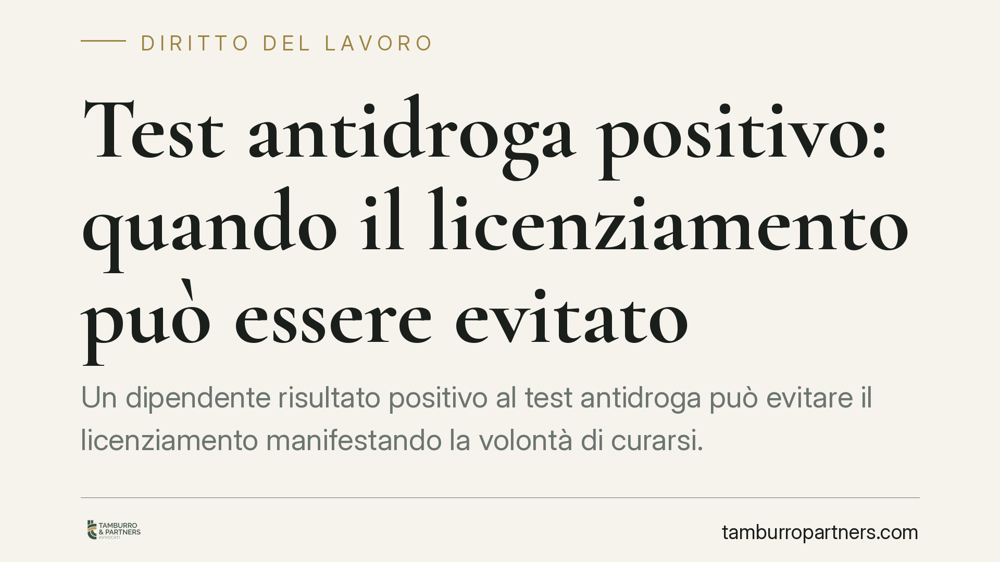

Test antidroga positivo: quando il licenziamento può essere evitato
Un dipendente risultato positivo al test antidroga può evitare il licenziamento manifestando la volontà di curarsi. La questione tocca il delicato equilibrio tra potere disciplinare del datore e funzione riabilitativa prevista dall'art. 124 del Testo unico sugli stupefacenti. Analizziamo il quadro normativo, i presupposti del diritto alla conservazione del posto e le cautele che il caso impone a entrambe le parti.

Il caso
La vicenda riguarda un lavoratore addetto alla guida presso un'azienda di trasporto pubblico locale, risultato positivo al test antidroga. Il datore procede al licenziamento disciplinare. Il lavoratore, però, dichiara la propria volontà di sottoporsi a un programma terapeutico presso il SERT (il servizio pubblico per le dipendenze della ASL), invocando il diritto alla conservazione del posto.
Secondo un orientamento della Corte di Cassazione, questa richiesta può prevalere sulla sanzione espulsiva anche quando sia formulata in sede di difesa nel procedimento disciplinare, in ragione della finalità riabilitativa che la legge attribuisce alla tutela del lavoratore tossicodipendente.
Una precisazione sulla fonte. L'orientamento qui richiamato è attribuito a una recente ordinanza della Suprema Corte. Il riferimento numerico e la data non risultano, al momento, verificabili in via documentale: trattiamo quindi la pronuncia come espressione di un indirizzo giurisprudenziale, senza attribuirle un numero o una data che non siamo in grado di confermare. Prima di assumere decisioni è indispensabile il riscontro sul testo integrale.
Inquadramento normativo
La norma di riferimento è l'art. 124 del d.P.R. 9 ottobre 1990, n. 309 (Testo unico sugli stupefacenti). La disposizione va letta distinguendo con attenzione due ipotesi diverse, spesso confuse.
Prima ipotesi: il lavoratore tossicodipendente. Chi sia affetto da tossicodipendenza e intenda accedere a un programma terapeutico e di riabilitazione ha diritto alla conservazione del posto di lavoro per il tempo in cui la sospensione della prestazione lavorativa è dovuta all'esecuzione del trattamento. In questa fase il rapporto resta sospeso. Il regime economico del periodo di sospensione va ancorato al testo dell'art. 124 e agli istituti del contratto collettivo applicabile: in assenza di diversa previsione, la sospensione per trattamento non comporta di per sé obbligo retributivo. È un punto da verificare caso per caso sul comma applicabile e sulla contrattazione di settore.
Seconda ipotesi: i familiari. L'art. 124 prevede anche una tutela, con un limite temporale di tre anni, per i lavoratori familiari di un tossicodipendente che partecipi al programma terapeutico. Si tratta di una fattispecie distinta: il limite triennale appartiene a questa ipotesi e non va esteso automaticamente al lavoratore direttamente interessato dalla dipendenza.
Un presupposto è decisivo: il diritto presuppone l'accertamento di uno stato di tossicodipendenza e l'adesione a un programma terapeutico certificato. Non copre l'uso occasionale o sporadico di sostanze, che resta valutabile sul piano disciplinare secondo le regole ordinarie.
Implicazioni pratiche
Per il lavoratore, la positività al test non equivale sempre a un licenziamento automatico. La tempestiva manifestazione della volontà di curarsi, accompagnata dalla presa in carico del SERT, può attivare la tutela conservativa anche in sede di difesa disciplinare.
Per il datore di lavoro, occorre tenere distinti due piani che non coincidono:
- la conservazione del posto, che attiene al rapporto e alla sua sospensione;
- l'idoneità alla mansione, che riguarda la sicurezza.
Per le cosiddette mansioni a rischio — tra cui la guida di mezzi adibiti al trasporto di persone — operano gli accertamenti sanitari previsti dall'Intesa Stato-Regioni del 30 ottobre 2007 e dal successivo Accordo del 18 settembre 2008. Un lavoratore in programma terapeutico può avere diritto a conservare il posto e, al contempo, essere temporaneamente inidoneo a guidare. In tal caso la soluzione non è il licenziamento, ma la gestione dell'inidoneità secondo le regole sulla sorveglianza sanitaria e sull'eventuale adibizione a mansioni compatibili.
Cosa fare in concreto
Per il lavoratore:
- Rivolgersi tempestivamente al SERT della ASL per l'accertamento dello stato di dipendenza e la presa in carico.
- Formalizzare per iscritto la volontà di aderire al programma terapeutico, anche all'interno delle giustificazioni disciplinari.
- Conservare la documentazione sanitaria che attesti l'avvio e la prosecuzione del trattamento.
Per il datore di lavoro:
- Prima di adottare la sanzione, verificare se sia stata manifestata la volontà di curarsi e se sussista una presa in carico certificata.
- Distinguere la posizione disciplinare dal giudizio di idoneità alla mansione, attivando il medico competente per le mansioni a rischio.
- Valutare la sospensione del rapporto e l'eventuale adibizione a mansioni compatibili in luogo del recesso.
È opportuno, in entrambe le prospettive, affrontare queste situazioni con un'istruttoria documentale accurata e con il riscontro del testo integrale della pronuncia invocata.
---
Contributo informativo a cura di Tamburro & Partners - Avv. Giuseppe Tamburro. Non costituisce parere legale.
Ogni storia di lavoro ha i suoi tempi.
Se gestisci HR e vuoi un confronto su contenzioso, ispezioni o licenziamenti, scrivi allo studio. Ti rispondiamo entro un giorno lavorativo.